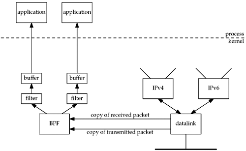

| [ Team LiB ] |
|
29.2 BSD Packet Filter (BPF)4.4BSD and many other Berkeley-derived implementations support BPF, the BSD packet filter. The implementation of BPF is described in Chapter 31 of TCPv2. The history of BPF, a description of the BPF pseudomachine, and a comparison with the SunOS 4.1.x NIT packet filter is provided in [McCanne and Jacobson 1993]. Each datalink driver calls BPF right before a packet is transmitted and right after a packet is received, as shown in Figure 29.1. Figure 29.1. Packet capture using BPF. Examples of these calls for an Ethernet interface are in Figures 4.11 and 4.19 of TCPv2. The reason for calling BPF as soon as possible after reception and as late as possible before transmission is to provide accurate timestamps. While it is not hard to provide a tap into the datalink to catch all packets, the power of BPF is in its filtering capability. Each application that opens a BPF device can load its own filter, which is then applied by BPF to each packet. While some filters are simple (the filter " udp or tcp" receives only UDP or TCP packets), others can examine fields in the packet headers for certain values. For example, tcp and port 80 and tcp[13:1] & 0x7 != 0 was used in Chapter 14 of TCPv3 to collect only TCP segments to or from port 80 that had either the SYN, FIN, or RST flags on. The expression tcp[13:1] refers to the 1-byte value starting at byte offset 13 from the start of the TCP header. BPF implements a register-based filter machine that applies application-specific filters to each received packet. While one can write filter programs in the machine language of this pseudomachine (which is described on the BPF man page), the simplest interface is to compile ASCII strings (such as the one beginning with tcp that we just showed) into this machine language using the pcap_compile function that we will describe in Section 29.7. Three techniques are used by BPF to reduce its overhead:
In Figure 29.1, we show only the BPF reception of packets: packets received by the datalink from below (the network) and packets received by the datalink from above (IP). The application can also write to BPF, causing packets to be sent out the datalink, but most applications only read from BPF. There is no reason to write to BPF to send IP datagrams because the IP_HDRINCL socket option allows us to write any type of IP datagram desired, including the IP header. (We show an example of this in Section 29.7.) The only reason to write to BPF is to send our own network packets that are not IP datagrams. The RARP daemon does this, for example, to send its RARP replies, which are not IP datagrams. To access BPF, we must open a BPF device that is not currently open. For example, we could try /dev/bpf0, and if the error return is EBUSY, then we could try /dev/bpf1, and so on. Once a device is opened, about a dozen ioctl commands set the characteristics of the device: load the filter, set the read timeout, set the buffer size, attach a datalink to the BPF device, enable promiscuous mode, and so on. I/O is then performed using read and write. |
| [ Team LiB ] |
|